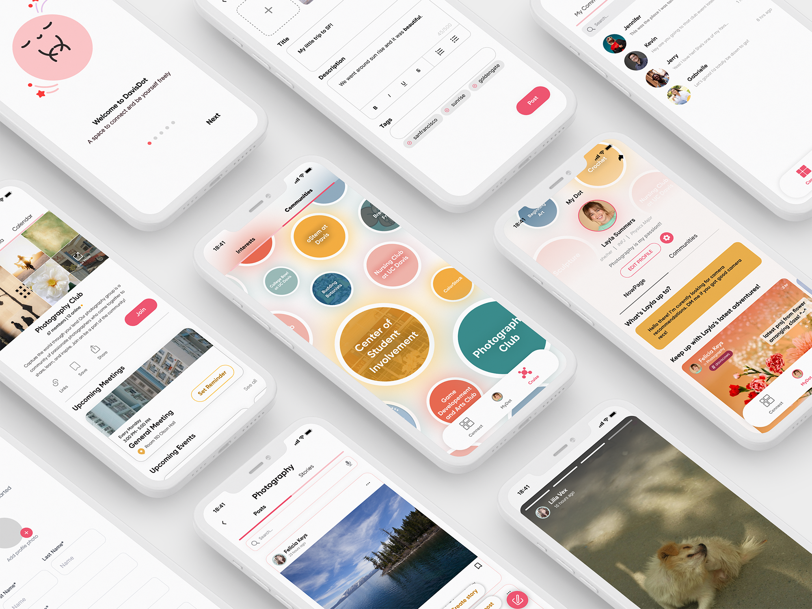
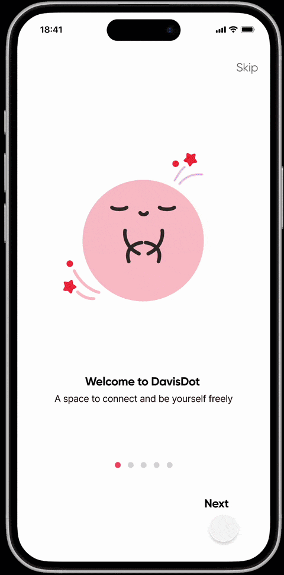
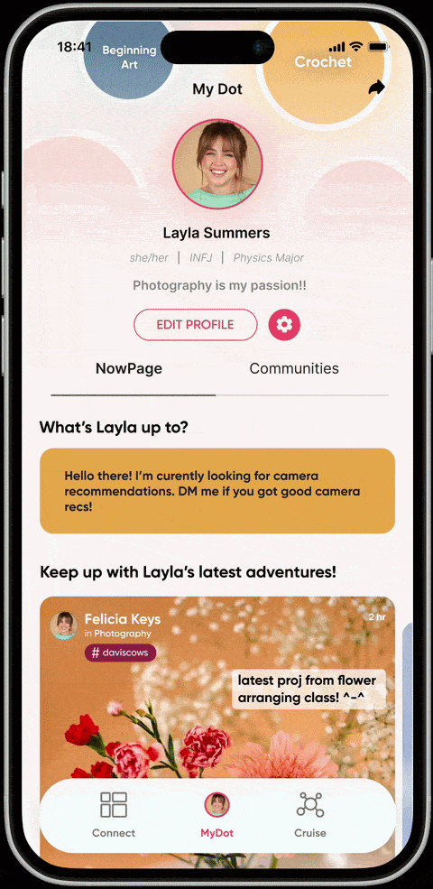
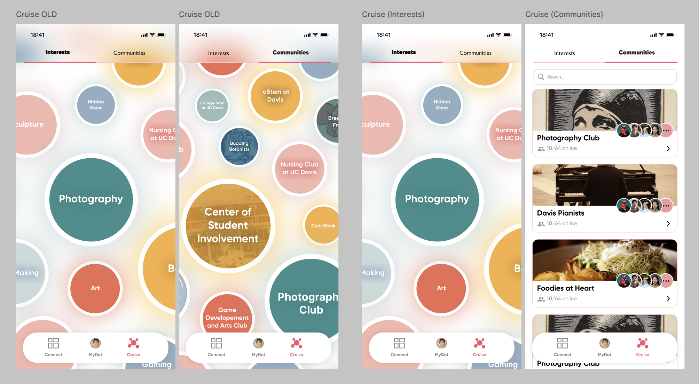
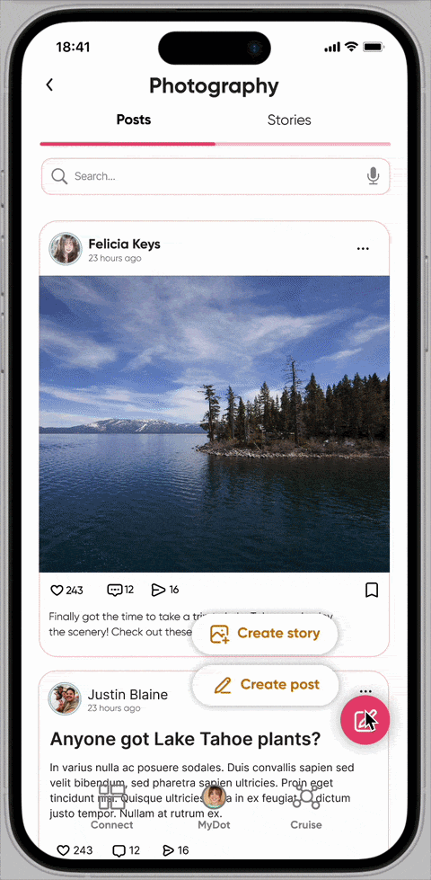
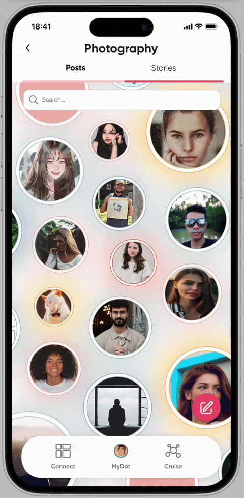
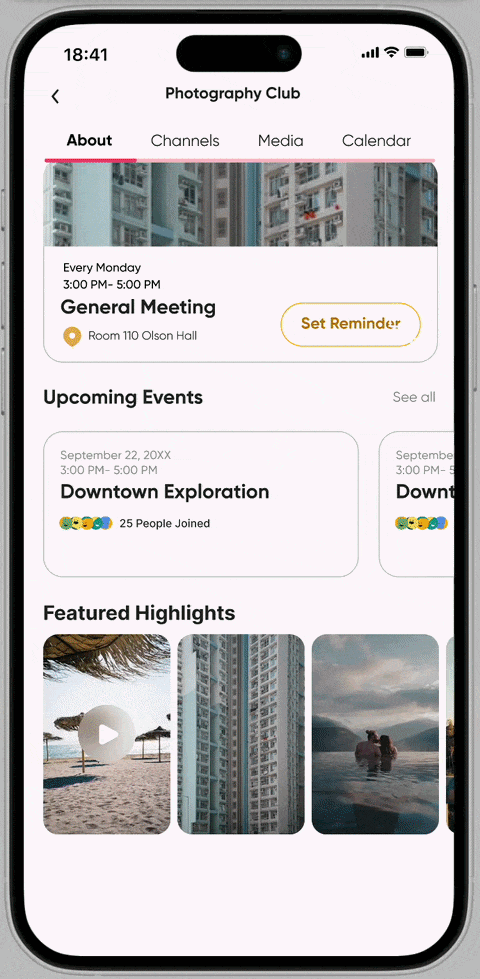
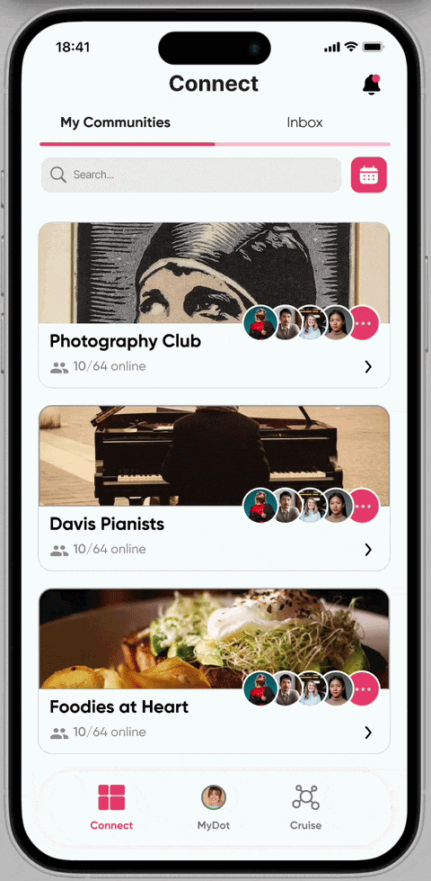

Took a social app for UC Davis students from 8 low-fidelity screens to a 200+ screen product with a working soft launch, owning design end to end as the team's design lead.

Grew the product from initial low-fi wireframes to 200+ high-fidelity, prototyped screens, including a full dark mode.
Test users in the soft launch, giving the team real feedback that we iterated on before my time on the project wrapped up.
Led design through a constantly rotating team, keeping decisions documented and legible to whoever joined next.
A social app for UC Davis students. The team ran interviews with students and recent UC Davis alumni about how they connected with people in Davis. We notived a pattern: people weren't short on content, they were short on opportunities to make new connections. Interviewees described Instagram and TikTok as algorithm-driven and passive, and Discord as useful for niche communities but too anonymous to build any lasting connections.
That research shaped the product's core idea: represent a person's interests as "Dots," and let those Dots double as doors into real communities, like a photography club or a running group, instead of just another feed to scroll.
How might we help someone find their people through what they're already into, without turning the app into another mass media platform?
"Interests as Dots" was a strong concept, but it wasn't yet a product. I owned onboarding end to end: designing the welcome flow, a mascot-guided walkthrough, and the early concept for a short personality quiz that could recommend communities to a brand-new user instead of dropping them into an empty app. I also built out the profile system ("My Dot"), including the input flow for setting up general info like name, major, and pronouns.


The app's information architecture split browsing from belonging: "Cruise" was built for casually exploring Interests and Communities with no membership required, while "Connect" managed the communities and connections you'd actually joined.
User testing surfaced that Interests and Communities looked and behaved too similarly inside Cruise. Both used the same floating bubble layout, the same color treatment, and the same interaction pattern, so people couldn't tell at a glance which communities they'd already joined, or why Interests and Communities needed to be two separate tabs at all.
I worked through several structural alternatives with the team, from merging the two tabs, to separating them into fully distinct pages, to changing the navigation entirely, before we converged on a solution that kept the tabs functionally distinct but gave them completely different visual languages. Interests stayed as the floating bubble field, since that loose, exploratory feel fit browsing a topic with no commitment attached. Communities moved to a searchable list of cards, each with a real photo, a member count, and a live "online now" count, so the tab reads immediately as a directory of groups you belong to or could join.

Interests kept its bubble layout since it's meant to feel like open browsing. Communities became a searchable card list with a photo, member count, and online status per group, resolving the confusion testing had surfaced between the two tabs.
By soft launch, the product had core flows working end to end: account creation, profile setup, posting and browsing within interests, joining and participating in communities, and direct messaging, all designed and prototyped in both light and dark mode. We got the app in front of 20–25 test users, collected feedback, and had already started iterating on it before my time on the project wrapped up. I made sure the product was left well documented, with the Figma file, design rationale, and open questions organized for a future team to pick up. DavisDot final prototype: click-through of Cruise, Connect, My Dot and settings




Core flows at soft launch: creating a post, viewing stories, browsing a community page, and managing joined communities in Connect.
Team membership changed constantly over 15+ months. I learned to document the reasoning behind a decision, not just the decision itself, so a new teammate could open the Figma file and understand why something looked the way it did.
"Interests as Dots" was compelling on a whiteboard. Making the difference between browsing an interest and belonging to a community feel obvious took multiple rounds of real testing and structural rework.
The Cruise/Communities confusion didn't surface in design reviews. It showed up the moment real users tried to navigate it. That reinforced how much I rely on testing to catch what a room full of designers won't.
last updated august 2026